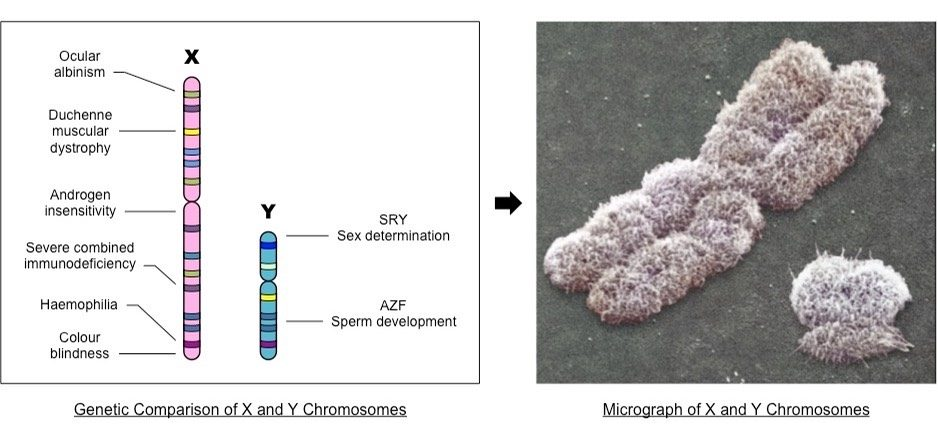
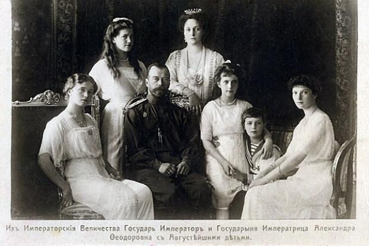
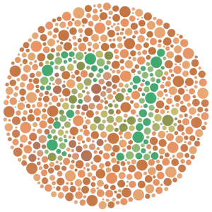

Sex chromosomes and sex determination
Human diploid cells have 44 autosomes (chromosomes 1–22) and 2 sex chromosomes: XX is female and XY is male.
- All the eggs a female produces carry an X chromosome.
- Half of a male's sperm carry an X and half carry a Y.
- An X sperm fertilising an egg gives a female (XX); a Y sperm gives a male (XY).
- So it is the father's sperm that determines the sex of the child. Because identical twins share all their genes, they can't be of opposite sexes, unlike fraternal twins.
The X chromosome is much larger than the Y, so many genes on the X have no matching gene on the Y.

- The sex chromosomes of a human female are and of a male are .
- The chance of any child being a boy is %.
- The sex of a child is determined by the .
Sex linkage
Sex-linked genes are located on the sex chromosomes, so their inheritance is linked to biological sex. Most are on the X chromosome (X-linkage); the Y chromosome does little more than determine male development. In this course, we only study X-linked genes.
Males have only one X, so they are hemizygous for X-linked genes: whatever allele is on their X is expressed.
Writing sex-linked genotypes
Write the chromosome (X or Y), then add a superscript letter for the allele: capital for dominant, lower case for recessive. For example XBXb (female) or XBY (male).
Use the letter B for the gene.
- A heterozygous female, X-linked:
- A male with an X-linked recessive allele:
- A female homozygous for an X-linked recessive allele:
Type superscripts as plain letters, e.g. XBXb for XBXb.
X-linked recessive: haemophilia
Haemophilia is a blood clotting disorder: even small wounds don't stop bleeding. It occurs in about 1 in 10 000 births, almost entirely in males, and famously affected the descendants of Queen Victoria and the royal families of Europe, including Russia.
- The normal allele is dominant (XN); the haemophilia allele is recessive (Xn).
- Males who are XnY have the disorder (they have no normal allele).
- Females who are XNXn are carriers: healthy, but able to pass it on. Affected females (XnXn) are rare.

X-linked dominant: vitamin D-resistant rickets
Rickets softens children's bones, causing fractures and deformities such as bowed legs. It is usually caused by a lack of vitamin D, but one form is vitamin D-resistant and inherited as X-linked dominant.
- The abnormal allele is dominant (XR); the normal allele is recessive (Xr).
- Males who are XRY are affected; females who are XRXr or XRXR are affected. Females can't be carriers.
Coat colour in cats is controlled by a gene on the X chromosome but not the Y. XB gives black and XG gives ginger. The alleles are codominant, and heterozygous cats have bands of black and ginger (tortoiseshell). Which phenotype is not possible?
A tortoiseshell cat needs both XB and XG, so it needs two X chromosomes. Males have only one X.
Red-green colour blindness is inherited as a recessive X-linked disorder. Which of the following is true?
An unaffected carrier mother (XBXb) passes Xb to half her sons, who will be colour-blind. Women can be colour-blind (XbXb), men can't be carriers (they show any allele on their X), and fathers pass their X to every daughter.

A carrier woman (XHXh) has children with a man who doesn't have haemophilia (XHY).
- The chance that a son has haemophilia is %.
- The chance that a daughter has haemophilia is %.
- The chance that a daughter is a carrier is %.